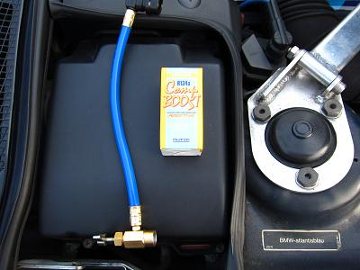
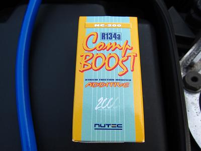
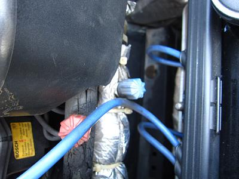
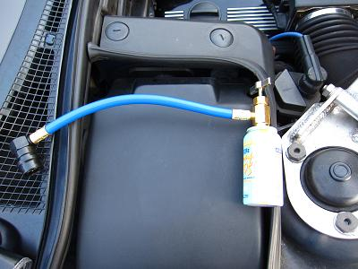
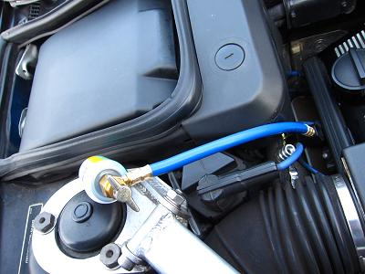
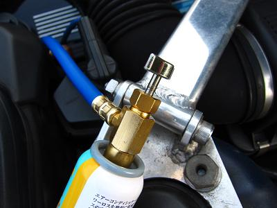
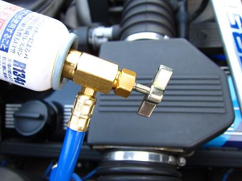
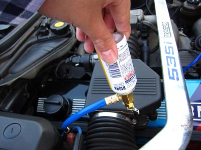
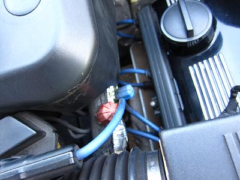

 今回入手したのは、NUTEC NC-200だ。 ワコーズなどからも同じような商品が出ているが、今回はNUTECを選んだ。 MゴローはMTオイルにNUTECを使用してから、NUTEC信者になってしまったのだ（笑 |
 R134a専用となっている。 少量のフロンガスとオイルが充填されている。ガスの圧力を利用してオイルを送り込むようだ。 |
 ここにﾎｰｽを繋いで充填する。 青いキャップのほうが低圧側、赤いキャップのほうが高圧側だ。 ガスの充填は必ず低圧側から行う。間違うと缶が爆発することもあるそうだ。 E34の中にはキャップが両方黒色の車両も見たことがある。 この場合は配管の太いほうに接続する。 R134aシステムの場合、フールプルーフによってアダプター自体が低圧側にしか接続できないようになっているので、間違うことはないと思う。 |
 さて、充填操作に移ろう。 まずは、缶を充填ﾎｰｽに接続する。 まだ缶の封は開けない。 |
 次に、缶は繋いだまま車両側へﾎｰｽを接続する。 |
 ここで、パージを行う。 （パージとは充填ﾎｰｽにある空気を追い出す操作のことをいう。） 車両側へ接続したので、ﾎｰｽ内にはフロンガスの圧力がかかっている。 それを利用するのだ。 パージは接続した缶を少し緩め「プシュ」と少しガスが抜ければ完了だ。 パージが終わればエンジンをかけて冷房を最大にしておく。 |
 このバルブを回すと、内部で針が出て缶の封を開ける仕組みになっている。 回していくと缶に穴が開く感触が分かる。 |
 回したノブを戻していくとガスとオイルが入っていく。 この時、缶は写真のように逆さに持ち、少し振ると良い。 上手くいっていると缶が冷たくなってくる。 数分缶を振ったり、逆さにしたりしていると充填が完了した。 缶が軽くなり、冷たかった缶が温くなってきた頃が完了の目安だ。 |
 ﾎｰｽを外して、キャップをすれば終了だ。 充填後の感想としては、コンプレッサーの振動、作動音がかなり小さくなった。これは間違いない。 エアコンベルトの寿命が延びてくれそうだ。 走行時の負荷減少や冷房の温度の変化は長距離を乗っていないのでまだ分からない。 夏が終わった頃にもう一度インプレッションしようと思う。 これで3000円ちょっとのコストなら、音が静かになっただけでも十分だ＾＾ |